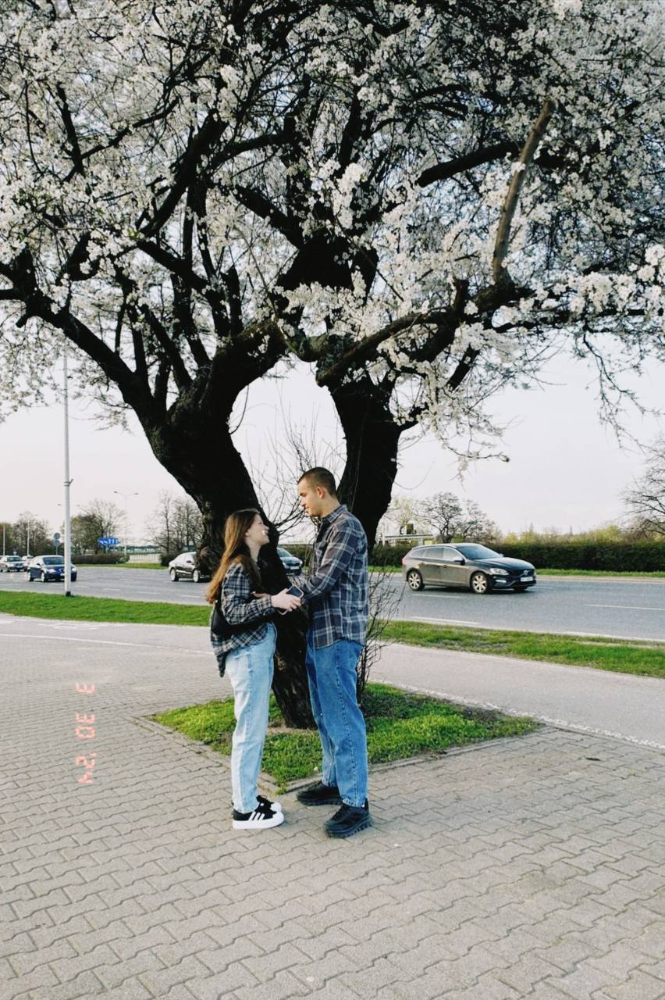

Моя Вика — это мой маленький бублик, который всегда согревает моё сердце. Она особенная, и с каждым днём я люблю её всё больше и больше. Её улыбка делает мой день светлее, а её поддержка — сильнее.
Мы разделили множество прекрасных моментов вместе: прогулки по парку, смех до слёз, уютные вечера. Всё это — наше сокровище.
Вместе мы можем достичь всего. Я верю, что наши мечты станут реальностью, и впереди нас ждёт множество радостных дней. Моя любовь к Вике будет расти с каждым днём.